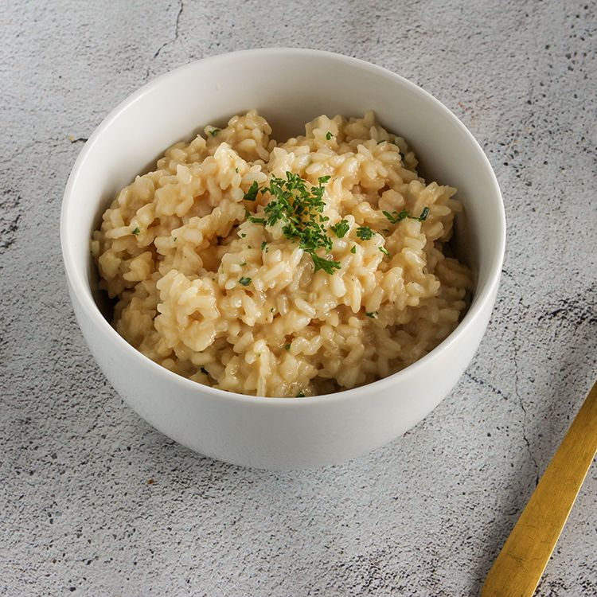

Risotto

A creamy, traditional Italian rice dish
Risotto is a traditional Italian rice dish made from a short-grained, starchy variety of rice called Arborio rice. A properly cooked risotto should form a soft, creamy mound on a dinner plate—it shouldn't run across the plate, nor should it be stiff or gluey. While not difficult, some essential tips will help you make restaurant-worthy risotto at home.
Ingredients
- 4 cups chicken stock
- 1 tablespoon vegetable oil
- 3 tablespoons butter, divided
- 1 medium shallot, chopped
- 1 1/2 cups Arborio rice
- 1/2 cup dry vermouth
- 1/4 cup grated Parmesan cheese
- 1 tablespoon Italian parsley, chopped
- Kosher salt, to taste
- Fresher ground black pepper, to taste
Steps
- Gather the ingredients.
- In a medium saucepan, heat the stock to a simmer. Lower the heat so the stock stays hot while you cook the risotto.
- In a large, heavy-bottomed saucepan, heat the oil and 1 tablespoon of the butter over medium heat. When the butter has melted, add the chopped shallot or onion. Sauté for 2 to 3 minutes or until slightly translucent.
- Add the rice to the pot and stir it briskly with a wooden spoon so that the grains are coated with the oil and melted butter. Sauté for another minute or so, until there is a slightly nutty aroma. Make sure not to let the rice turn brown.
- Add the vermouth or wine and cook while stirring, until the liquid is fully absorbed.
- Add a ladle of hot chicken stock to the rice and stir every once in a while until the liquid is fully absorbed. When the rice appears almost dry, add another ladle of stock and repeat the process.
- Continue adding stock, a ladle at a time, for about 20 minutes or until the grains are tender but still firm to the bite, without being crunchy (al dente).
- Stir in the remaining 2 tablespoons of butter and the Parmesan cheese and parsley. Season to taste with kosher salt and freshly ground pepper.
- Serve in bowls and enjoy.